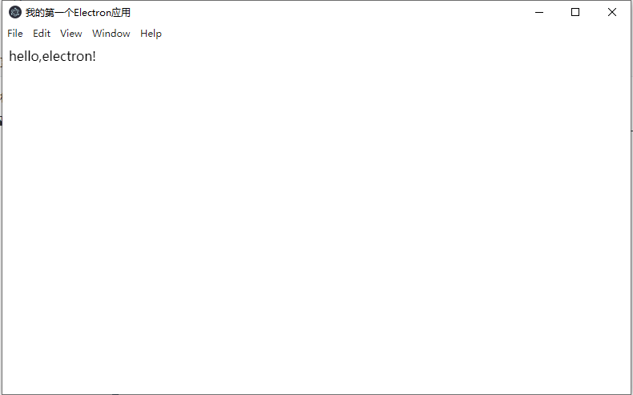
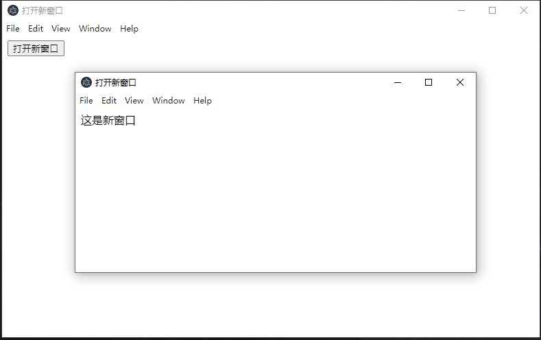

安装环境
安装node环境
推荐安装
LTS长期支持版本全局安装
electron1
npm i -g electron
如果因为网络问题安装失败的话，可以尝试以下解决方案，先更换
electron镜像源1
npm config set ELECTRON_MIRROR "https://cdn.npm.taobao.org/dist/electron/"
再执行
npm i -g electron命令即可解决。检测环境是否安装成功
1
2node -v //显示版本号即安装成功
electron -v //显示版本号即安装成功
建立第一个electron工程
创建工程入口文件
main.js1
2
3
4
5
6
7
8
9
10
11
12
13
14
15
16
17
18
19
20
21
22
23
24
25
26const { app, BrowserWindow} = require('electron');
let win;
const createWindow = () => {
win = new BrowserWindow({
width:800,
height:500,
webPreferences:{
// 解决渲染进程使用不了Node.js API的问题
nodeIntegration:true,
// 这样才能使用remote模块
enableRemoteModule:true
}
});
win.loadFile('index.html');
// 启动调试模式
win.webContents.openDevTools()
win.on('close',()=>{
win = null;
})
}
app.on('ready',()=>{
createWindow();
});创建窗口UI文件
index.html1
2
3
4
5
6
7
8
9
10
11
<html lang="en">
<head>
<meta charset="UTF-8">
<meta name="viewport" content="width=device-width, initial-scale=1.0">
<title>我的第一个Electron应用</title>
</head>
<body>
hello,electron!
</body>
</html>
创建项目配置文件
package.json1
npm init -y
在命令行执行
electron .命令就可以运行该electron项目了1
electron .
为了方便区分操作，在
package.json里面添加脚本命令1
2
3
4
5
6
7
8
9
10
11
12{
"name": "First Electron APPPLICATION",
"version": "1.0.0",
"description": "我的第一个Electron应用",
"main": "main.js",
"scripts": {
"dev": "electron ."
},
"keywords": [],
"author": "",
"license": "ISC"
}这样，通过执行
npm start命令也可以启动electron项目了。如下图所示：
Remote模块的使用
Electron有主进程和渲染进程，在渲染进程中想要使用主进程的模块和方法的时候，可以通过remote模块来解决
例如：实现在web中的按钮点击打开新的窗口
创建openNewWindow.html文件
1 |
|
创建newWindow.html文件
1 |
|
创建openNewWindow.js文件
1 | const { remote } = require('electron'); |
修改main.js文件
1 | const { app, BrowserWindow} = require('electron'); |
执行启动命令
1 | npm start |
效果如下，点击按钮会打开新的窗口：

进程间通信
如果想要在主进程和渲染进程之间建立通信，可以使用ipc(Inter-Process Communication)模块，进行进程间通信，使用代码如下
主进程：
1 | const { ipcMain } = require('electron') |
渲染进程：
1 | const { ipcRenderer } = require('electron') |
注意，在渲染进程中要使用Node.js的API模块和方法，需要在主进程中设置nodeIntegration属性为true，如下所示：
1 | const { app, BrowserWindow} = require('electron'); |
工程模板
electron-forge
你可以在这里查看相关的文档和信息 electronforge.io
electron-builder
你可以在这里查看相关的文档和信息 github传送门